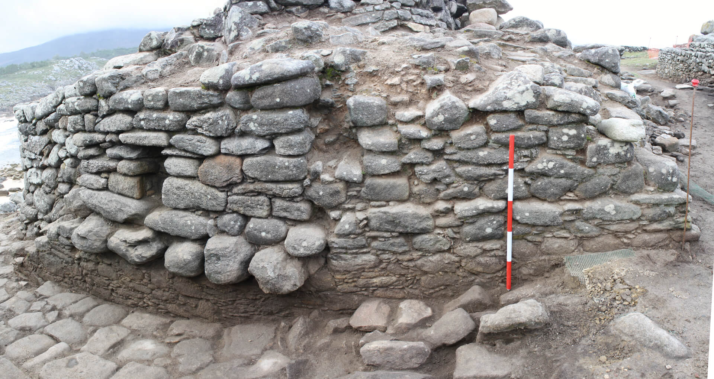

Os
segundo e terceiro recintos de Baroña constituían un espazo fortificado
que ocultaba no seu interior un espazo ateigado de casas, pero a
muralla era practicable e podíase circular pola súa parte superior. Os
seus habitantes podían acceder ao seu adarve ou paseo de rolda por
medio de distintas sistemas, dos que conservamos dous: unha escaleira
dobre, axuntada á parede interna, que segue o enxeñoso sistema de
"pasos compensados", e outra de tiro único, que accedía orixinalmente a
un punto moi próximo ao torreón sur da muralla e a pasarela voada sobre
a porta.
En total, o Castro componse de catro recintos ou "barrios" separados
por murallas e situados a distinta cota, ao estilo dunha xigantesca
"pirámide escalonada". Trátase dunha morfoloxía moi complexa que
precisou de enormes obras de desmonte e aterrazamento e que cambiaron
para sempre a topografía orixinal da península.
Os dous recintos que conservan vivendas son os intermedios: o segundo e
o terceiro. Entre restos de construcións de planta redondeada ou
ovalada, os arqueólogos tamén identificaron outras que poden
corresponderse con actividades artesanais, fundamentalmente metalúrxica.
O cuarto e último recinto resulta enigmático. Agás unha pequena
sondaxe, nunca foi escavado, pero semella que nel sitúanse os restos
dunha gran construción illada. Domina visualmente o interior do
poboado, así como as terras do litoral e a boca da ría e mar aberto,
algo moi importante se temos en conta que os recintos habitados
carecían de perspectiva visual ao exterior por estar rodeados de
murallas.
A funcionalidade deste espazo non está aínda clara, pero podía
relacionarse cun sentido simbólico, relixioso e social semellante ao
das acrópoles do mundo clásico.